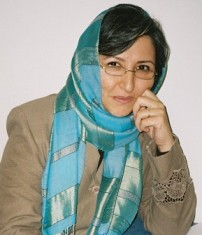

پذيرش > سایت نوشته ها > خطوط قرمزِ بين جنبشهاي اجتماعي، افسانه یا واقعیت/ فرانک فرید


 خطوط قرمزِ بين جنبشهاي اجتماعي، افسانه یا واقعیت/ فرانک فرید خطوط قرمزِ بين جنبشهاي اجتماعي، افسانه یا واقعیت/ فرانک فرید
27 دی 1386 - - نسخه قابل چاپ
گويا يكي از اعتراضات عليه مريم حسين خواه، بههنگام بازجويي اين بوده كه چرا اخبار مربوط به دستگيري شهناز غلامي [1] را در سايت زنستان منتشر كرده است! اگرچه اتهامات غلامي موارد ديگري را غير فعاليتاش براي حقوق زنان شامل ميشد- هرچند موقع دستگيري اين اتهامات معمولا مشخص نميشود. اما مگر نه اينكه او فعال جنبش زنان و كمپين يك ميليون امضا هم بوده، بر فرض اگر هم نبوده، فعال اجتماعي و فعال ميان جنبشي كه هست، چون او زني است كه براي پيشبرد جنبش ملي آذربايجان و يا ... هم فعاليت ميكند، ديگر نبايد خبر دستگيري او را زنان منتشر كنند! اگر هم كسي چنين خبرها يا خبرهاي مشابهي را منعكس كند، متهم شود به نشر اكاذيب و ... !
آنقدر خط و نشان بكشند كه باورمان شود اگر هم گناه كبيرهي "فعاليت اجتماعي" را مرتكب ميشويم، حداقل تك بعدي حركت كنيم و بس. بين حقوق مسلم بشر، ديوار چين بكشيم و آن را به حق بشر تقليل دهيم و با حصاركشي و برج و بارو ساختن به دورِخواست عمدهي خود، اولويتهاي ديگران را ناديده بگيريم. هر جرياني، ديگري را داخل خط قرمزي بداند كه نبايد به آن نزديك شد وگرنه فعاليت فعلياش نير به خطر ميافتد. ولي مگرفعاليت براي كدام جنبش مجاز است كه فرد با وارد شدن به حوزه استحفاظي جنبشي ديگر، امكانات، تريبون و مجوزاش را از دست بدهد! مگر نه اينكه خود جنبش زنان هم، خط قرمز ورود مردان و سايرين به اين جنبش را دارد! كه در بعضي موارد مردان در صورت دستگيري براي اين جنبش تاوان بيشتري ميدهند.
مشكلات را جامعهي مردسالار، براي زنان و كلِ جامعه ايجاد كرده و حالا كه موقع مطرح كردن آنها فرا رسيده، بايد فقط خود زنان به حل پيامدهاي آن بپردازند! عمري، زبان و فرهنگ و داشتههاي مليِ قوميتها، توسط همين جامعهي مبتلا به سرآمد انگاري زبان و فرهنگ حاكم، خوار و ضعيف و كمرنگ شده و حالا فقط بايد خود قوميتها به فكر آن باشند! چگونه ميتوانيم چنين سطحينگر باشيم كه خط قرمزهاي همديگر را باور كنيم؟ از يك طرف به خاطر جنسيتمان اقليت محسوب و با واژههايي مثل ضعيفه و سليطه! تحقير شديم و از طرف ديگر شديم اقليت قومي و قبيلهاي! و فرهنگمان شد خرده فرهنگ. همان گونه كه مطرح كردن حق طلاق و حق حضانت فرزند و...، امنيت ملي را به خطر مياندازد! مشخص است كه سخن گفتن از زبان مادريِ حلال مانند شير مادرنيز، تجريه طلبي محسوب شود. يا كساني كه كمتر جلوي چشم باشند و حاميان كمتري داشته باشند، مثل هانا و روناك متهم به همكاري با گروههاي معاند شوند!
بر فرض عدهاي در آن سوي مرزها از اين شرايط "سو استفاده" ميكنند، ولي مگر همهي اين مدت، راه براي "حسن استفاده"ي آقايان بسته بود؟! در واقع اين شرايط را خود ما با انسداد حركات مدني جامعه فراهم آوردهايم كه به سادگي ميشد با راهگشايي براي حل معضلات ابتدايي اقشار مختلف جامعه، از فرصتها استفاده كرد و راه را بر سو استفادهها بست، نه با انگ زدن به پاكترين و تلاشگرترين افراد جامعه و بستن دهان دلسوزان! مگر نه اينكه دانشجويان بچههاي همين مردمي هستند كه از هزار و يك مشكل رنج ميبرند، آن وقت اين دانشجويان نبايد حمايت خود را از خواهر ومادر و همسر خود؛ پدر يا مادر كارگر يا معلم خود ابراز، يا از هويت ملي و زباني و جنسيتي خود دفاع كنند. دور هر كس دايرهاي بكشيم و مدام عرصه را بر او تنگ كنيم و بگوييم كه چه؟ كه فقط حق دارد مشكلات صنفي خود را مطرح كند؟ ولي مگر حركت صنفي شركت اتوبوسراني بيشترين سركوب را در پي نداشت؟!...
البته منظور اين نيست كه جنبشهاي مختلف اجتماعي، به جاي يكديگر فعاليت و اقدام كنند، يا در هم ادغام شوند و يا استقلال آنها خدشهدار شود، اما فعاليت هريك نبايد به انكار ديگري و فراموش كردن مشتركات بين جنبشها بيانجامد. بهتر است هر از گاهي از زاويهاي متفاوت به قضايا نگاه كنيم. انگار براي اينكه جور ديگري ببينيم، بايد جور ديگري بشنويم؛ بهتر است بگويم، گوش كنيم. چنانچه اولين تمرين مقدماتي در كتاب پانصد و پنجاه صفحهاي جولي مرتوس [2] ، تمرين گوش دادن است؛ گوش دادن جدي به صحبتهاي يكديگر! اين تمرين، براي برقراري زمينهي مشترك در بين شركت كنندگان، براي تشخيص حقوقي كه در زندگي روزمرهي زنان، انكار شده و براي شناختن ترسها و قالبهاي متحجر ذهني خودمان در بارهي زناني كه با ما تفاوت دارند، است. تمرينهاي بعدي براي تعيين هويت خود و يافتن هويتهاي چندگانه، مقولهي مربوط به اقليتها و اينكه زنان تركيبي از هويتهاي گوناگون به شمار ميروند، ميباشد. متعاقبا تمريناتي براي توجه به عدم وجود فرصت مساوي براي همهي اين گروهها و اعتنا كردن به صداهاي ناشنيده براي شناختِ اهميت جامعيت ومسائل ذاتي آن و بحث در بارهي پرسشهايي مانند اين است كه اگر چه هيچ گروهي نميتواند همهي انواع و اقسام زنان را درخود جاي دهد، چرا به حساب آوردن انواع مختلف عقايد و آرا اهميت دارد؟ بيشتر تمرينها براي اين است كه گروههاي مختلف زنان ضمنِ تبيين وتعيين شرايط، موقعيت و حركتهاي بعدي خود، سايرين را نيز به حساب آورند. اين قضيه، بهخصوص در مورد مسالهي اقليتها حائز اهميت است...
گويي او همهي اين تمرينها را انجام داده بود، جلوه جواهري را ميگويم. جور ديگري گوش ميداد: جدي. بدون تعميم دانستههايش، بدون اصرار بر پيشفرضهاي قبلي و پيشداوريهايي كه احتمالا قبلا در مورد اقليتها شنيده بود، تجزيه و تحليل ميكرد. يادداشت برميداشت و ميدانست كه يك گروه نميتواند نمايندهي همهي زنان باشد؛ بيتوجهي به تفاوتها ممكن است موجب شود، زنان ساير گروههاي اجتماعي، زن بودن خود را فراموش كنند و عطاي پيوستن به جنبش زنان را به لقايش ببخشند، همانطور كه جولي مرتوس در پاراگرافي كه به بحث گذاشته مينويسد: بسياري اوقات آن بخش ازوجودمان كه "زن" است در درون هويتهاي ديگر غرقه ميشود.
جلوه، به محض شنيدن اين جمله از ايولين ريد آن را با اهميت يافت و يادداشت كرد، "زنان در رويارويي نهائي براي جامعهاي بهتر نياز به همپيمان دارند و ما آنها را از ميان كارگران، دانشجويان، سياهپوستان و ساير گروههاي ستمديده خواهيم يافت. " [3] او ميدانست بخش عظيمي از زنان كه مدافع حقوق آنها هستيم، در دل چنين گروههايي دچار تناقضات و تبعيضات بسيار پيچيدهتري هستند.
فردي چنين فهميده، آرام، ساده و سرشار از احساس مسئوليت، متهم ميشود به تشويش اذهان عمومي؛ آن هم، نه به دليل فساد، رشوهخواري، زمينخواري، پول شويي يا قتل و غارت، تنها به اين دليل ساده كه فعال جنبش زنان است و براي تغيير قوانين تبعيضآميز عليه زنان به جمعآوري امضا ميپردازد! خيل عظيم پروندههاي معوقه در قوه قضاييه و شوراهاي حل اختلاف كه بيانگر گرفتاري اكثريت قريب به اتفاق خانوادههاست، موجب تشويش اذهان عمومي نميشود يا حوادث تلخِ ناشي از وجود قوانين نا متناسب با شرايط فعلي جامعه يا تعلل در اجراي قوانين منطبق با حقوق بشر؛ گراني و تورم و پيامدهاي آن نظم عمومي را مختل نميكند، اما فعاليت كساني كه با دست خالي، بدون داشتن قدرت مالي و اجرايي، در پي گشودن گرههاي كورِ بسته شده به دست زورمداران، به دنبال راه حلهاي مسالمتآميز ميگردند، متهم ميشوند به تشويش اذهان عمومي و نشر اكاذيب و تبليغ عليه نظام، همكاري با گروههاي معاند و...!
به كارگيري چنين ادبياتي به شكلي چنين نامتناسب با فعاليت افراد، نتيجهاي جز لوث كردن اين كلمات و مصمم كردن فعالان اجتماعي در پيشبرد اهداف صلحآميزشان ندارد، چنانچه خطرناك جلوه دادن فعاليت گروههاي مختلف به يكديگر و كشيدن ديوار چين بين آنها نيز نميتواند دوامي داشته باشد؛ مگر ديوارهاي حقيقي تاب آوردند كه ديوارهاي مجازي توان مقاومت داشته باشند؟!
وبلاگ حق
ارسال به
بالاترین
،
توییتر
،
فریندفید
،
فیسبوک
يادداشت
[1] فعال اجتماعي و عضو انجمن روزنامهنگاران زن ايران( رزا) كه چندي پيش در تبريز دستگير و سپس با قرا وثيقه آزاد شد. چندين سال است، حقوق معوقهي همسر متوفياش را كه استاد دانشگاه بود، به او پرداخت نكردهاند، به طوري كه مجبور شده بود، شبها هم پرستار سالمندان شود كه اين كار را نيز بهخاطر دستگيرياش از دست داد و بالاجبار، پس از سه سال تحمل تنگدستي و به رغم ميل باطنياش براي ماندن در شهر مورد علاقه و در كنارِ مادر بيمارش، براي تامين معاش خود و دختر نه سالهاش از تبريز به تهران كوچيد.
[2] آموزش حقوق انساني زنان و دختران (اقدام محلي/ تغيير جهاني) جولي مرتوس باهمكاري ننسي فلاوئرز، مليكا دات، ترجمهي فريبرز مجيدي، ناشر دنياي مادر، چاپ اول، 1382
[3] آزادي زنان (مسايل، تحليلها وديدگاهها)، ايولين ريد، ترجمهي افشنگ مقصودي، نشر گل آذين، چاپ دوم1383، صص. 121-122
در همين بخش :
 یک خبر تلخ؟ یک قانونشکنی؟ یک تصمیم بخشنامهای جدید؟ یک خبر تلخ؟ یک قانونشکنی؟ یک تصمیم بخشنامهای جدید؟
چرا بایست به سکسوالیته پرداخت؟ / نفیسه آزاد
آزارجنسی خانگی؛ «قربانی» نه، «نجات یافته»
زنان، بزرگترین بازندگان بهار عرب
سانسور از دیدگاه جنسیتی/الهه امانی
ديگر بخش ها :
طرح یک میلیون امضا
|
مقالات
|
سایت نوشته ها
|
اخبار
|
گزارش كمپين
|
گفت و گو
|
علیه سکوت
|
كوچه به كوچه
|
نامه های شما
|
گزارش ویژه
|
گفتگو با اعضا
|
ویژه سالگرد کمپین
|
تصویر برابری
|
دل آرام علی
|
تریبون
|
مقالات
|
تاریخ شفاهی
|
خارج از چارچوب
|
کتابخانه
|
درباره کمپین
|
کمپین در شهرها
|
کمپین در بند
|
صدای تغییر
|
ویژه 22 خرداد
|
لایحه حمایت از خانواده
|
گالری
|
عشا مومنی
|
امیر یعقوبعلی
|
خدیجه مقدم
|
راحله عسگری زاده و نسیم خسروی
|
پروین اردلان،جلوه جواهری، مریم حسین خواه، ناهید کشاورز
|
زینب پیغمبرزاده
|
سعیده امین، سارا ایمانیان، محبوبه حسین زاده، ناهید کشاورز و همایون نامی
|
احترام شادفر
|
نسیم سرابندی زاده،فاطمه دهدشتی
|
وبلاگ مهمان
|
پرونده خرم آباد
|
دستگیری ها
|
مریم مالک
|
پرستو اللهیاری
|
مهرنوش اعتمادی
|
سمیه رشیدی
|
Other Languages
|
همراهان
|
«فراخوان کمپین ده روز با بهاره هدایت»
| English
|